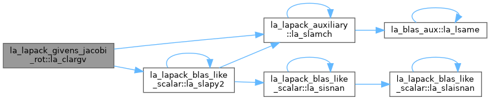
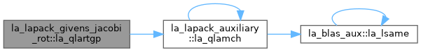
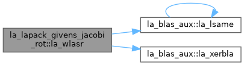

- Generated by
 1.13.2
1.13.2
|
fortran-lapack
|
Givens and Jacobi plane rotations. More...
Functions/Subroutines | |
| pure subroutine, public | la_slar2v (n, x, y, z, incx, c, s, incc) |
| SLAR2V: applies a vector of real plane rotations from both sides to a sequence of 2-by-2 real symmetric matrices, defined by the elements of the vectors x, y and z. For i = 1,2,...,n ( x(i) z(i) ) := ( c(i) s(i) ) ( x(i) z(i) ) ( c(i) -s(i) ) ( z(i) y(i) ) ( -s(i) c(i) ) ( z(i) y(i) ) ( s(i) c(i) ) | |
| pure subroutine, public | la_dlar2v (n, x, y, z, incx, c, s, incc) |
| DLAR2V: applies a vector of real plane rotations from both sides to a sequence of 2-by-2 real symmetric matrices, defined by the elements of the vectors x, y and z. For i = 1,2,...,n ( x(i) z(i) ) := ( c(i) s(i) ) ( x(i) z(i) ) ( c(i) -s(i) ) ( z(i) y(i) ) ( -s(i) c(i) ) ( z(i) y(i) ) ( s(i) c(i) ) | |
| pure subroutine, public | la_qlar2v (n, x, y, z, incx, c, s, incc) |
| QLAR2V: applies a vector of real plane rotations from both sides to a sequence of 2-by-2 real symmetric matrices, defined by the elements of the vectors x, y and z. For i = 1,2,...,n ( x(i) z(i) ) := ( c(i) s(i) ) ( x(i) z(i) ) ( c(i) -s(i) ) ( z(i) y(i) ) ( -s(i) c(i) ) ( z(i) y(i) ) ( s(i) c(i) ) | |
| pure subroutine, public | la_slargv (n, x, incx, y, incy, c, incc) |
| SLARGV: generates a vector of real plane rotations, determined by elements of the real vectors x and y. For i = 1,2,...,n ( c(i) s(i) ) ( x(i) ) = ( a(i) ) ( -s(i) c(i) ) ( y(i) ) = ( 0 ) | |
| pure subroutine, public | la_dlargv (n, x, incx, y, incy, c, incc) |
| DLARGV: generates a vector of real plane rotations, determined by elements of the real vectors x and y. For i = 1,2,...,n ( c(i) s(i) ) ( x(i) ) = ( a(i) ) ( -s(i) c(i) ) ( y(i) ) = ( 0 ) | |
| pure subroutine, public | la_qlargv (n, x, incx, y, incy, c, incc) |
| QLARGV: generates a vector of real plane rotations, determined by elements of the real vectors x and y. For i = 1,2,...,n ( c(i) s(i) ) ( x(i) ) = ( a(i) ) ( -s(i) c(i) ) ( y(i) ) = ( 0 ) | |
| pure subroutine, public | la_slartg (f, g, c, s, r) |
| ! | |
| pure subroutine, public | la_dlartg (f, g, c, s, r) |
| ! | |
| pure subroutine, public | la_qlartg (f, g, c, s, r) |
| ! | |
| pure subroutine, public | la_slartgp (f, g, cs, sn, r) |
| SLARTGP: generates a plane rotation so that [ CS SN ] . [ F ] = [ R ] where CS**2 + SN**2 = 1. [ -SN CS ] [ G ] [ 0 ] This is a slower, more accurate version of the Level 1 BLAS routine SROTG, with the following other differences: F and G are unchanged on return. If G=0, then CS=(+/-)1 and SN=0. If F=0 and (G .ne. 0), then CS=0 and SN=(+/-)1. The sign is chosen so that R >= 0. | |
| pure subroutine, public | la_dlartgp (f, g, cs, sn, r) |
| DLARTGP: generates a plane rotation so that [ CS SN ] . [ F ] = [ R ] where CS**2 + SN**2 = 1. [ -SN CS ] [ G ] [ 0 ] This is a slower, more accurate version of the Level 1 BLAS routine DROTG, with the following other differences: F and G are unchanged on return. If G=0, then CS=(+/-)1 and SN=0. If F=0 and (G .ne. 0), then CS=0 and SN=(+/-)1. The sign is chosen so that R >= 0. | |
| pure subroutine, public | la_qlartgp (f, g, cs, sn, r) |
| QLARTGP: generates a plane rotation so that [ CS SN ] . [ F ] = [ R ] where CS**2 + SN**2 = 1. [ -SN CS ] [ G ] [ 0 ] This is a slower, more accurate version of the Level 1 BLAS routine QROTG, with the following other differences: F and G are unchanged on return. If G=0, then CS=(+/-)1 and SN=0. If F=0 and (G .ne. 0), then CS=0 and SN=(+/-)1. The sign is chosen so that R >= 0. | |
| pure subroutine, public | la_slartv (n, x, incx, y, incy, c, s, incc) |
| SLARTV: applies a vector of real plane rotations to elements of the real vectors x and y. For i = 1,2,...,n ( x(i) ) := ( c(i) s(i) ) ( x(i) ) ( y(i) ) ( -s(i) c(i) ) ( y(i) ) | |
| pure subroutine, public | la_dlartv (n, x, incx, y, incy, c, s, incc) |
| DLARTV: applies a vector of real plane rotations to elements of the real vectors x and y. For i = 1,2,...,n ( x(i) ) := ( c(i) s(i) ) ( x(i) ) ( y(i) ) ( -s(i) c(i) ) ( y(i) ) | |
| pure subroutine, public | la_qlartv (n, x, incx, y, incy, c, s, incc) |
| QLARTV: applies a vector of real plane rotations to elements of the real vectors x and y. For i = 1,2,...,n ( x(i) ) := ( c(i) s(i) ) ( x(i) ) ( y(i) ) ( -s(i) c(i) ) ( y(i) ) | |
| pure subroutine, public | la_slasr (side, pivot, direct, m, n, c, s, a, lda) |
| SLASR: applies a sequence of plane rotations to a real matrix A, from either the left or the right. When SIDE = 'L', the transformation takes the form A := P*A and when SIDE = 'R', the transformation takes the form A := A*P**T where P is an orthogonal matrix consisting of a sequence of z plane rotations, with z = M when SIDE = 'L' and z = N when SIDE = 'R', and P**T is the transpose of P. When DIRECT = 'F' (Forward sequence), then P = P(z-1) * ... * P(2) * P(1) and when DIRECT = 'B' (Backward sequence), then P = P(1) * P(2) * ... * P(z-1) where P(k) is a plane rotation matrix defined by the 2-by-2 rotation R(k) = ( c(k) s(k) ) = ( -s(k) c(k) ). When PIVOT = 'V' (Variable pivot), the rotation is performed for the plane (k,k+1), i.e., P(k) has the form P(k) = ( 1 ) ( ... ) ( 1 ) ( c(k) s(k) ) ( -s(k) c(k) ) ( 1 ) ( ... ) ( 1 ) where R(k) appears as a rank-2 modification to the identity matrix in rows and columns k and k+1. When PIVOT = 'T' (Top pivot), the rotation is performed for the plane (1,k+1), so P(k) has the form P(k) = ( c(k) s(k) ) ( 1 ) ( ... ) ( 1 ) ( -s(k) c(k) ) ( 1 ) ( ... ) ( 1 ) where R(k) appears in rows and columns 1 and k+1. Similarly, when PIVOT = 'B' (Bottom pivot), the rotation is performed for the plane (k,z), giving P(k) the form P(k) = ( 1 ) ( ... ) ( 1 ) ( c(k) s(k) ) ( 1 ) ( ... ) ( 1 ) ( -s(k) c(k) ) where R(k) appears in rows and columns k and z. The rotations are performed without ever forming P(k) explicitly. | |
| pure subroutine, public | la_dlasr (side, pivot, direct, m, n, c, s, a, lda) |
| DLASR: applies a sequence of plane rotations to a real matrix A, from either the left or the right. When SIDE = 'L', the transformation takes the form A := P*A and when SIDE = 'R', the transformation takes the form A := A*P**T where P is an orthogonal matrix consisting of a sequence of z plane rotations, with z = M when SIDE = 'L' and z = N when SIDE = 'R', and P**T is the transpose of P. When DIRECT = 'F' (Forward sequence), then P = P(z-1) * ... * P(2) * P(1) and when DIRECT = 'B' (Backward sequence), then P = P(1) * P(2) * ... * P(z-1) where P(k) is a plane rotation matrix defined by the 2-by-2 rotation R(k) = ( c(k) s(k) ) = ( -s(k) c(k) ). When PIVOT = 'V' (Variable pivot), the rotation is performed for the plane (k,k+1), i.e., P(k) has the form P(k) = ( 1 ) ( ... ) ( 1 ) ( c(k) s(k) ) ( -s(k) c(k) ) ( 1 ) ( ... ) ( 1 ) where R(k) appears as a rank-2 modification to the identity matrix in rows and columns k and k+1. When PIVOT = 'T' (Top pivot), the rotation is performed for the plane (1,k+1), so P(k) has the form P(k) = ( c(k) s(k) ) ( 1 ) ( ... ) ( 1 ) ( -s(k) c(k) ) ( 1 ) ( ... ) ( 1 ) where R(k) appears in rows and columns 1 and k+1. Similarly, when PIVOT = 'B' (Bottom pivot), the rotation is performed for the plane (k,z), giving P(k) the form P(k) = ( 1 ) ( ... ) ( 1 ) ( c(k) s(k) ) ( 1 ) ( ... ) ( 1 ) ( -s(k) c(k) ) where R(k) appears in rows and columns k and z. The rotations are performed without ever forming P(k) explicitly. | |
| pure subroutine, public | la_qlasr (side, pivot, direct, m, n, c, s, a, lda) |
| QLASR: applies a sequence of plane rotations to a real matrix A, from either the left or the right. When SIDE = 'L', the transformation takes the form A := P*A and when SIDE = 'R', the transformation takes the form A := A*P**T where P is an orthogonal matrix consisting of a sequence of z plane rotations, with z = M when SIDE = 'L' and z = N when SIDE = 'R', and P**T is the transpose of P. When DIRECT = 'F' (Forward sequence), then P = P(z-1) * ... * P(2) * P(1) and when DIRECT = 'B' (Backward sequence), then P = P(1) * P(2) * ... * P(z-1) where P(k) is a plane rotation matrix defined by the 2-by-2 rotation R(k) = ( c(k) s(k) ) = ( -s(k) c(k) ). When PIVOT = 'V' (Variable pivot), the rotation is performed for the plane (k,k+1), i.e., P(k) has the form P(k) = ( 1 ) ( ... ) ( 1 ) ( c(k) s(k) ) ( -s(k) c(k) ) ( 1 ) ( ... ) ( 1 ) where R(k) appears as a rank-2 modification to the identity matrix in rows and columns k and k+1. When PIVOT = 'T' (Top pivot), the rotation is performed for the plane (1,k+1), so P(k) has the form P(k) = ( c(k) s(k) ) ( 1 ) ( ... ) ( 1 ) ( -s(k) c(k) ) ( 1 ) ( ... ) ( 1 ) where R(k) appears in rows and columns 1 and k+1. Similarly, when PIVOT = 'B' (Bottom pivot), the rotation is performed for the plane (k,z), giving P(k) the form P(k) = ( 1 ) ( ... ) ( 1 ) ( c(k) s(k) ) ( 1 ) ( ... ) ( 1 ) ( -s(k) c(k) ) where R(k) appears in rows and columns k and z. The rotations are performed without ever forming P(k) explicitly. | |
| pure subroutine, public | la_clacrt (n, cx, incx, cy, incy, c, s) |
| CLACRT: performs the operation ( c s )( x ) ==> ( x ) ( -s c )( y ) ( y ) where c and s are complex and the vectors x and y are complex. | |
| pure subroutine, public | la_zlacrt (n, cx, incx, cy, incy, c, s) |
| ZLACRT: performs the operation ( c s )( x ) ==> ( x ) ( -s c )( y ) ( y ) where c and s are complex and the vectors x and y are complex. | |
| pure subroutine, public | la_wlacrt (n, cx, incx, cy, incy, c, s) |
| WLACRT: performs the operation ( c s )( x ) ==> ( x ) ( -s c )( y ) ( y ) where c and s are complex and the vectors x and y are complex. | |
| pure subroutine, public | la_clar2v (n, x, y, z, incx, c, s, incc) |
| CLAR2V: applies a vector of complex plane rotations with real cosines from both sides to a sequence of 2-by-2 complex Hermitian matrices, defined by the elements of the vectors x, y and z. For i = 1,2,...,n ( x(i) z(i) ) := ( conjg(z(i)) y(i) ) ( c(i) conjg(s(i)) ) ( x(i) z(i) ) ( c(i) -conjg(s(i)) ) ( -s(i) c(i) ) ( conjg(z(i)) y(i) ) ( s(i) c(i) ) | |
| pure subroutine, public | la_zlar2v (n, x, y, z, incx, c, s, incc) |
| ZLAR2V: applies a vector of complex plane rotations with real cosines from both sides to a sequence of 2-by-2 complex Hermitian matrices, defined by the elements of the vectors x, y and z. For i = 1,2,...,n ( x(i) z(i) ) := ( conjg(z(i)) y(i) ) ( c(i) conjg(s(i)) ) ( x(i) z(i) ) ( c(i) -conjg(s(i)) ) ( -s(i) c(i) ) ( conjg(z(i)) y(i) ) ( s(i) c(i) ) | |
| pure subroutine, public | la_wlar2v (n, x, y, z, incx, c, s, incc) |
| WLAR2V: applies a vector of complex plane rotations with real cosines from both sides to a sequence of 2-by-2 complex Hermitian matrices, defined by the elements of the vectors x, y and z. For i = 1,2,...,n ( x(i) z(i) ) := ( conjg(z(i)) y(i) ) ( c(i) conjg(s(i)) ) ( x(i) z(i) ) ( c(i) -conjg(s(i)) ) ( -s(i) c(i) ) ( conjg(z(i)) y(i) ) ( s(i) c(i) ) | |
| pure subroutine, public | la_clartg (f, g, c, s, r) |
| ! | |
| pure subroutine, public | la_zlartg (f, g, c, s, r) |
| ! | |
| pure subroutine, public | la_wlartg (f, g, c, s, r) |
| ! | |
| pure subroutine, public | la_clartv (n, x, incx, y, incy, c, s, incc) |
| CLARTV: applies a vector of complex plane rotations with real cosines to elements of the complex vectors x and y. For i = 1,2,...,n ( x(i) ) := ( c(i) s(i) ) ( x(i) ) ( y(i) ) ( -conjg(s(i)) c(i) ) ( y(i) ) | |
| pure subroutine, public | la_zlartv (n, x, incx, y, incy, c, s, incc) |
| ZLARTV: applies a vector of complex plane rotations with real cosines to elements of the complex vectors x and y. For i = 1,2,...,n ( x(i) ) := ( c(i) s(i) ) ( x(i) ) ( y(i) ) ( -conjg(s(i)) c(i) ) ( y(i) ) | |
| pure subroutine, public | la_wlartv (n, x, incx, y, incy, c, s, incc) |
| WLARTV: applies a vector of complex plane rotations with real cosines to elements of the complex vectors x and y. For i = 1,2,...,n ( x(i) ) := ( c(i) s(i) ) ( x(i) ) ( y(i) ) ( -conjg(s(i)) c(i) ) ( y(i) ) | |
| pure subroutine, public | la_clasr (side, pivot, direct, m, n, c, s, a, lda) |
| CLASR: applies a sequence of real plane rotations to a complex matrix A, from either the left or the right. When SIDE = 'L', the transformation takes the form A := P*A and when SIDE = 'R', the transformation takes the form A := A*P**T where P is an orthogonal matrix consisting of a sequence of z plane rotations, with z = M when SIDE = 'L' and z = N when SIDE = 'R', and P**T is the transpose of P. When DIRECT = 'F' (Forward sequence), then P = P(z-1) * ... * P(2) * P(1) and when DIRECT = 'B' (Backward sequence), then P = P(1) * P(2) * ... * P(z-1) where P(k) is a plane rotation matrix defined by the 2-by-2 rotation R(k) = ( c(k) s(k) ) = ( -s(k) c(k) ). When PIVOT = 'V' (Variable pivot), the rotation is performed for the plane (k,k+1), i.e., P(k) has the form P(k) = ( 1 ) ( ... ) ( 1 ) ( c(k) s(k) ) ( -s(k) c(k) ) ( 1 ) ( ... ) ( 1 ) where R(k) appears as a rank-2 modification to the identity matrix in rows and columns k and k+1. When PIVOT = 'T' (Top pivot), the rotation is performed for the plane (1,k+1), so P(k) has the form P(k) = ( c(k) s(k) ) ( 1 ) ( ... ) ( 1 ) ( -s(k) c(k) ) ( 1 ) ( ... ) ( 1 ) where R(k) appears in rows and columns 1 and k+1. Similarly, when PIVOT = 'B' (Bottom pivot), the rotation is performed for the plane (k,z), giving P(k) the form P(k) = ( 1 ) ( ... ) ( 1 ) ( c(k) s(k) ) ( 1 ) ( ... ) ( 1 ) ( -s(k) c(k) ) where R(k) appears in rows and columns k and z. The rotations are performed without ever forming P(k) explicitly. | |
| pure subroutine, public | la_zlasr (side, pivot, direct, m, n, c, s, a, lda) |
| ZLASR: applies a sequence of real plane rotations to a complex matrix A, from either the left or the right. When SIDE = 'L', the transformation takes the form A := P*A and when SIDE = 'R', the transformation takes the form A := A*P**T where P is an orthogonal matrix consisting of a sequence of z plane rotations, with z = M when SIDE = 'L' and z = N when SIDE = 'R', and P**T is the transpose of P. When DIRECT = 'F' (Forward sequence), then P = P(z-1) * ... * P(2) * P(1) and when DIRECT = 'B' (Backward sequence), then P = P(1) * P(2) * ... * P(z-1) where P(k) is a plane rotation matrix defined by the 2-by-2 rotation R(k) = ( c(k) s(k) ) = ( -s(k) c(k) ). When PIVOT = 'V' (Variable pivot), the rotation is performed for the plane (k,k+1), i.e., P(k) has the form P(k) = ( 1 ) ( ... ) ( 1 ) ( c(k) s(k) ) ( -s(k) c(k) ) ( 1 ) ( ... ) ( 1 ) where R(k) appears as a rank-2 modification to the identity matrix in rows and columns k and k+1. When PIVOT = 'T' (Top pivot), the rotation is performed for the plane (1,k+1), so P(k) has the form P(k) = ( c(k) s(k) ) ( 1 ) ( ... ) ( 1 ) ( -s(k) c(k) ) ( 1 ) ( ... ) ( 1 ) where R(k) appears in rows and columns 1 and k+1. Similarly, when PIVOT = 'B' (Bottom pivot), the rotation is performed for the plane (k,z), giving P(k) the form P(k) = ( 1 ) ( ... ) ( 1 ) ( c(k) s(k) ) ( 1 ) ( ... ) ( 1 ) ( -s(k) c(k) ) where R(k) appears in rows and columns k and z. The rotations are performed without ever forming P(k) explicitly. | |
| pure subroutine, public | la_wlasr (side, pivot, direct, m, n, c, s, a, lda) |
| WLASR: applies a sequence of real plane rotations to a complex matrix A, from either the left or the right. When SIDE = 'L', the transformation takes the form A := P*A and when SIDE = 'R', the transformation takes the form A := A*P**T where P is an orthogonal matrix consisting of a sequence of z plane rotations, with z = M when SIDE = 'L' and z = N when SIDE = 'R', and P**T is the transpose of P. When DIRECT = 'F' (Forward sequence), then P = P(z-1) * ... * P(2) * P(1) and when DIRECT = 'B' (Backward sequence), then P = P(1) * P(2) * ... * P(z-1) where P(k) is a plane rotation matrix defined by the 2-by-2 rotation R(k) = ( c(k) s(k) ) = ( -s(k) c(k) ). When PIVOT = 'V' (Variable pivot), the rotation is performed for the plane (k,k+1), i.e., P(k) has the form P(k) = ( 1 ) ( ... ) ( 1 ) ( c(k) s(k) ) ( -s(k) c(k) ) ( 1 ) ( ... ) ( 1 ) where R(k) appears as a rank-2 modification to the identity matrix in rows and columns k and k+1. When PIVOT = 'T' (Top pivot), the rotation is performed for the plane (1,k+1), so P(k) has the form P(k) = ( c(k) s(k) ) ( 1 ) ( ... ) ( 1 ) ( -s(k) c(k) ) ( 1 ) ( ... ) ( 1 ) where R(k) appears in rows and columns 1 and k+1. Similarly, when PIVOT = 'B' (Bottom pivot), the rotation is performed for the plane (k,z), giving P(k) the form P(k) = ( 1 ) ( ... ) ( 1 ) ( c(k) s(k) ) ( 1 ) ( ... ) ( 1 ) ( -s(k) c(k) ) where R(k) appears in rows and columns k and z. The rotations are performed without ever forming P(k) explicitly. | |
| pure subroutine, public | la_clargv (n, x, incx, y, incy, c, incc) |
| CLARGV: generates a vector of complex plane rotations with real cosines, determined by elements of the complex vectors x and y. For i = 1,2,...,n ( c(i) s(i) ) ( x(i) ) = ( r(i) ) ( -conjg(s(i)) c(i) ) ( y(i) ) = ( 0 ) where c(i)**2 + ABS(s(i))**2 = 1 The following conventions are used (these are the same as in CLARTG, but differ from the BLAS1 routine CROTG): If y(i)=0, then c(i)=1 and s(i)=0. If x(i)=0, then c(i)=0 and s(i) is chosen so that r(i) is real. | |
| pure subroutine, public | la_zlargv (n, x, incx, y, incy, c, incc) |
| ZLARGV: generates a vector of complex plane rotations with real cosines, determined by elements of the complex vectors x and y. For i = 1,2,...,n ( c(i) s(i) ) ( x(i) ) = ( r(i) ) ( -conjg(s(i)) c(i) ) ( y(i) ) = ( 0 ) where c(i)**2 + ABS(s(i))**2 = 1 The following conventions are used (these are the same as in ZLARTG, but differ from the BLAS1 routine ZROTG): If y(i)=0, then c(i)=1 and s(i)=0. If x(i)=0, then c(i)=0 and s(i) is chosen so that r(i) is real. | |
| pure subroutine, public | la_wlargv (n, x, incx, y, incy, c, incc) |
| WLARGV: generates a vector of complex plane rotations with real cosines, determined by elements of the complex vectors x and y. For i = 1,2,...,n ( c(i) s(i) ) ( x(i) ) = ( r(i) ) ( -conjg(s(i)) c(i) ) ( y(i) ) = ( 0 ) where c(i)**2 + ABS(s(i))**2 = 1 The following conventions are used (these are the same as in WLARTG, but differ from the BLAS1 routine WROTG): If y(i)=0, then c(i)=1 and s(i)=0. If x(i)=0, then c(i)=0 and s(i) is chosen so that r(i) is real. | |
Givens and Jacobi plane rotations.
| pure subroutine, public la_lapack_givens_jacobi_rot::la_clacrt | ( | integer(ilp), intent(in) | n, |
| complex(sp), dimension(*), intent(inout) | cx, | ||
| integer(ilp), intent(in) | incx, | ||
| complex(sp), dimension(*), intent(inout) | cy, | ||
| integer(ilp), intent(in) | incy, | ||
| complex(sp), intent(in) | c, | ||
| complex(sp), intent(in) | s ) |
CLACRT: performs the operation ( c s )( x ) ==> ( x ) ( -s c )( y ) ( y ) where c and s are complex and the vectors x and y are complex.
| pure subroutine, public la_lapack_givens_jacobi_rot::la_clar2v | ( | integer(ilp), intent(in) | n, |
| complex(sp), dimension(*), intent(inout) | x, | ||
| complex(sp), dimension(*), intent(inout) | y, | ||
| complex(sp), dimension(*), intent(inout) | z, | ||
| integer(ilp), intent(in) | incx, | ||
| real(sp), dimension(*), intent(in) | c, | ||
| complex(sp), dimension(*), intent(in) | s, | ||
| integer(ilp), intent(in) | incc ) |
CLAR2V: applies a vector of complex plane rotations with real cosines from both sides to a sequence of 2-by-2 complex Hermitian matrices, defined by the elements of the vectors x, y and z. For i = 1,2,...,n ( x(i) z(i) ) := ( conjg(z(i)) y(i) ) ( c(i) conjg(s(i)) ) ( x(i) z(i) ) ( c(i) -conjg(s(i)) ) ( -s(i) c(i) ) ( conjg(z(i)) y(i) ) ( s(i) c(i) )
| pure subroutine, public la_lapack_givens_jacobi_rot::la_clargv | ( | integer(ilp), intent(in) | n, |
| complex(sp), dimension(*), intent(inout) | x, | ||
| integer(ilp), intent(in) | incx, | ||
| complex(sp), dimension(*), intent(inout) | y, | ||
| integer(ilp), intent(in) | incy, | ||
| real(sp), dimension(*), intent(out) | c, | ||
| integer(ilp), intent(in) | incc ) |
CLARGV: generates a vector of complex plane rotations with real cosines, determined by elements of the complex vectors x and y. For i = 1,2,...,n ( c(i) s(i) ) ( x(i) ) = ( r(i) ) ( -conjg(s(i)) c(i) ) ( y(i) ) = ( 0 ) where c(i)**2 + ABS(s(i))**2 = 1 The following conventions are used (these are the same as in CLARTG, but differ from the BLAS1 routine CROTG): If y(i)=0, then c(i)=1 and s(i)=0. If x(i)=0, then c(i)=0 and s(i) is chosen so that r(i) is real.

| pure subroutine, public la_lapack_givens_jacobi_rot::la_clartg | ( | complex(sp), intent(in) | f, |
| complex(sp), intent(in) | g, | ||
| real(sp), intent(out) | c, | ||
| complex(sp), intent(out) | s, | ||
| complex(sp), intent(out) | r ) |
!
CLARTG: generates a plane rotation so that [ C S ] . [ F ] = [ R ] [ -conjg(S) C ] [ G ] [ 0 ] where C is real and C**2 + |S|**2 = 1. The mathematical formulas used for C and S are sgn(x) = { x / |x|, x != 0 { 1, x = 0 R = sgn(F) * sqrt(|F|**2 + |G|**2) C = |F| / sqrt(|F|**2 + |G|**2) S = sgn(F) * conjg(G) / sqrt(|F|**2 + |G|**2) When F and G are real, the formulas simplify to C = F/R and S = G/R, and the returned values of C, S, and R should be identical to those returned by CLARTG. The algorithm used to compute these quantities incorporates scaling to avoid overflow or underflow in computing the square root of the sum of squares. This is a faster version of the BLAS1 routine CROTG, except for the following differences: F and G are unchanged on return. If G=0, then C=1 and S=0. If F=0, then C=0 and S is chosen so that R is real. Below, wp=>sp stands for single precision from LA_CONSTANTS module.
| pure subroutine, public la_lapack_givens_jacobi_rot::la_clartv | ( | integer(ilp), intent(in) | n, |
| complex(sp), dimension(*), intent(inout) | x, | ||
| integer(ilp), intent(in) | incx, | ||
| complex(sp), dimension(*), intent(inout) | y, | ||
| integer(ilp), intent(in) | incy, | ||
| real(sp), dimension(*), intent(in) | c, | ||
| complex(sp), dimension(*), intent(in) | s, | ||
| integer(ilp), intent(in) | incc ) |
CLARTV: applies a vector of complex plane rotations with real cosines to elements of the complex vectors x and y. For i = 1,2,...,n ( x(i) ) := ( c(i) s(i) ) ( x(i) ) ( y(i) ) ( -conjg(s(i)) c(i) ) ( y(i) )
| pure subroutine, public la_lapack_givens_jacobi_rot::la_clasr | ( | character, intent(in) | side, |
| character, intent(in) | pivot, | ||
| character, intent(in) | direct, | ||
| integer(ilp), intent(in) | m, | ||
| integer(ilp), intent(in) | n, | ||
| real(sp), dimension(*), intent(in) | c, | ||
| real(sp), dimension(*), intent(in) | s, | ||
| complex(sp), dimension(lda,*), intent(inout) | a, | ||
| integer(ilp), intent(in) | lda ) |
CLASR: applies a sequence of real plane rotations to a complex matrix A, from either the left or the right. When SIDE = 'L', the transformation takes the form A := P*A and when SIDE = 'R', the transformation takes the form A := A*P**T where P is an orthogonal matrix consisting of a sequence of z plane rotations, with z = M when SIDE = 'L' and z = N when SIDE = 'R', and P**T is the transpose of P. When DIRECT = 'F' (Forward sequence), then P = P(z-1) * ... * P(2) * P(1) and when DIRECT = 'B' (Backward sequence), then P = P(1) * P(2) * ... * P(z-1) where P(k) is a plane rotation matrix defined by the 2-by-2 rotation R(k) = ( c(k) s(k) ) = ( -s(k) c(k) ). When PIVOT = 'V' (Variable pivot), the rotation is performed for the plane (k,k+1), i.e., P(k) has the form P(k) = ( 1 ) ( ... ) ( 1 ) ( c(k) s(k) ) ( -s(k) c(k) ) ( 1 ) ( ... ) ( 1 ) where R(k) appears as a rank-2 modification to the identity matrix in rows and columns k and k+1. When PIVOT = 'T' (Top pivot), the rotation is performed for the plane (1,k+1), so P(k) has the form P(k) = ( c(k) s(k) ) ( 1 ) ( ... ) ( 1 ) ( -s(k) c(k) ) ( 1 ) ( ... ) ( 1 ) where R(k) appears in rows and columns 1 and k+1. Similarly, when PIVOT = 'B' (Bottom pivot), the rotation is performed for the plane (k,z), giving P(k) the form P(k) = ( 1 ) ( ... ) ( 1 ) ( c(k) s(k) ) ( 1 ) ( ... ) ( 1 ) ( -s(k) c(k) ) where R(k) appears in rows and columns k and z. The rotations are performed without ever forming P(k) explicitly.
| pure subroutine, public la_lapack_givens_jacobi_rot::la_dlar2v | ( | integer(ilp), intent(in) | n, |
| real(dp), dimension(*), intent(inout) | x, | ||
| real(dp), dimension(*), intent(inout) | y, | ||
| real(dp), dimension(*), intent(inout) | z, | ||
| integer(ilp), intent(in) | incx, | ||
| real(dp), dimension(*), intent(in) | c, | ||
| real(dp), dimension(*), intent(in) | s, | ||
| integer(ilp), intent(in) | incc ) |
DLAR2V: applies a vector of real plane rotations from both sides to a sequence of 2-by-2 real symmetric matrices, defined by the elements of the vectors x, y and z. For i = 1,2,...,n ( x(i) z(i) ) := ( c(i) s(i) ) ( x(i) z(i) ) ( c(i) -s(i) ) ( z(i) y(i) ) ( -s(i) c(i) ) ( z(i) y(i) ) ( s(i) c(i) )
| pure subroutine, public la_lapack_givens_jacobi_rot::la_dlargv | ( | integer(ilp), intent(in) | n, |
| real(dp), dimension(*), intent(inout) | x, | ||
| integer(ilp), intent(in) | incx, | ||
| real(dp), dimension(*), intent(inout) | y, | ||
| integer(ilp), intent(in) | incy, | ||
| real(dp), dimension(*), intent(out) | c, | ||
| integer(ilp), intent(in) | incc ) |
DLARGV: generates a vector of real plane rotations, determined by elements of the real vectors x and y. For i = 1,2,...,n ( c(i) s(i) ) ( x(i) ) = ( a(i) ) ( -s(i) c(i) ) ( y(i) ) = ( 0 )
| pure subroutine, public la_lapack_givens_jacobi_rot::la_dlartg | ( | real(dp), intent(in) | f, |
| real(dp), intent(in) | g, | ||
| real(dp), intent(out) | c, | ||
| real(dp), intent(out) | s, | ||
| real(dp), intent(out) | r ) |
!
DLARTG: generates a plane rotation so that [ C S ] . [ F ] = [ R ] [ -S C ] [ G ] [ 0 ] where C**2 + S**2 = 1. The mathematical formulas used for C and S are R = sign(F) * sqrt(F**2 + G**2) C = F / R S = G / R Hence C >= 0. The algorithm used to compute these quantities incorporates scaling to avoid overflow or underflow in computing the square root of the sum of squares. This version is discontinuous in R at F = 0 but it returns the same C and S as ZLARTG for complex inputs (F,0) and (G,0). This is a more accurate version of the BLAS1 routine DROTG, with the following other differences: F and G are unchanged on return. If G=0, then C=1 and S=0. If F=0 and (G .ne. 0), then C=0 and S=sign(1,G) without doing any floating point operations (saves work in DBDSQR when there are zeros on the diagonal). If F exceeds G in magnitude, C will be positive. Below, wp=>dp stands for double precision from LA_CONSTANTS module.
| pure subroutine, public la_lapack_givens_jacobi_rot::la_dlartgp | ( | real(dp), intent(in) | f, |
| real(dp), intent(in) | g, | ||
| real(dp), intent(out) | cs, | ||
| real(dp), intent(out) | sn, | ||
| real(dp), intent(out) | r ) |
DLARTGP: generates a plane rotation so that [ CS SN ] . [ F ] = [ R ] where CS**2 + SN**2 = 1. [ -SN CS ] [ G ] [ 0 ] This is a slower, more accurate version of the Level 1 BLAS routine DROTG, with the following other differences: F and G are unchanged on return. If G=0, then CS=(+/-)1 and SN=0. If F=0 and (G .ne. 0), then CS=0 and SN=(+/-)1. The sign is chosen so that R >= 0.
| pure subroutine, public la_lapack_givens_jacobi_rot::la_dlartv | ( | integer(ilp), intent(in) | n, |
| real(dp), dimension(*), intent(inout) | x, | ||
| integer(ilp), intent(in) | incx, | ||
| real(dp), dimension(*), intent(inout) | y, | ||
| integer(ilp), intent(in) | incy, | ||
| real(dp), dimension(*), intent(in) | c, | ||
| real(dp), dimension(*), intent(in) | s, | ||
| integer(ilp), intent(in) | incc ) |
DLARTV: applies a vector of real plane rotations to elements of the real vectors x and y. For i = 1,2,...,n ( x(i) ) := ( c(i) s(i) ) ( x(i) ) ( y(i) ) ( -s(i) c(i) ) ( y(i) )
| pure subroutine, public la_lapack_givens_jacobi_rot::la_dlasr | ( | character, intent(in) | side, |
| character, intent(in) | pivot, | ||
| character, intent(in) | direct, | ||
| integer(ilp), intent(in) | m, | ||
| integer(ilp), intent(in) | n, | ||
| real(dp), dimension(*), intent(in) | c, | ||
| real(dp), dimension(*), intent(in) | s, | ||
| real(dp), dimension(lda,*), intent(inout) | a, | ||
| integer(ilp), intent(in) | lda ) |
DLASR: applies a sequence of plane rotations to a real matrix A, from either the left or the right. When SIDE = 'L', the transformation takes the form A := P*A and when SIDE = 'R', the transformation takes the form A := A*P**T where P is an orthogonal matrix consisting of a sequence of z plane rotations, with z = M when SIDE = 'L' and z = N when SIDE = 'R', and P**T is the transpose of P. When DIRECT = 'F' (Forward sequence), then P = P(z-1) * ... * P(2) * P(1) and when DIRECT = 'B' (Backward sequence), then P = P(1) * P(2) * ... * P(z-1) where P(k) is a plane rotation matrix defined by the 2-by-2 rotation R(k) = ( c(k) s(k) ) = ( -s(k) c(k) ). When PIVOT = 'V' (Variable pivot), the rotation is performed for the plane (k,k+1), i.e., P(k) has the form P(k) = ( 1 ) ( ... ) ( 1 ) ( c(k) s(k) ) ( -s(k) c(k) ) ( 1 ) ( ... ) ( 1 ) where R(k) appears as a rank-2 modification to the identity matrix in rows and columns k and k+1. When PIVOT = 'T' (Top pivot), the rotation is performed for the plane (1,k+1), so P(k) has the form P(k) = ( c(k) s(k) ) ( 1 ) ( ... ) ( 1 ) ( -s(k) c(k) ) ( 1 ) ( ... ) ( 1 ) where R(k) appears in rows and columns 1 and k+1. Similarly, when PIVOT = 'B' (Bottom pivot), the rotation is performed for the plane (k,z), giving P(k) the form P(k) = ( 1 ) ( ... ) ( 1 ) ( c(k) s(k) ) ( 1 ) ( ... ) ( 1 ) ( -s(k) c(k) ) where R(k) appears in rows and columns k and z. The rotations are performed without ever forming P(k) explicitly.
| pure subroutine, public la_lapack_givens_jacobi_rot::la_qlar2v | ( | integer(ilp), intent(in) | n, |
| real(qp), dimension(*), intent(inout) | x, | ||
| real(qp), dimension(*), intent(inout) | y, | ||
| real(qp), dimension(*), intent(inout) | z, | ||
| integer(ilp), intent(in) | incx, | ||
| real(qp), dimension(*), intent(in) | c, | ||
| real(qp), dimension(*), intent(in) | s, | ||
| integer(ilp), intent(in) | incc ) |
QLAR2V: applies a vector of real plane rotations from both sides to a sequence of 2-by-2 real symmetric matrices, defined by the elements of the vectors x, y and z. For i = 1,2,...,n ( x(i) z(i) ) := ( c(i) s(i) ) ( x(i) z(i) ) ( c(i) -s(i) ) ( z(i) y(i) ) ( -s(i) c(i) ) ( z(i) y(i) ) ( s(i) c(i) )
| pure subroutine, public la_lapack_givens_jacobi_rot::la_qlargv | ( | integer(ilp), intent(in) | n, |
| real(qp), dimension(*), intent(inout) | x, | ||
| integer(ilp), intent(in) | incx, | ||
| real(qp), dimension(*), intent(inout) | y, | ||
| integer(ilp), intent(in) | incy, | ||
| real(qp), dimension(*), intent(out) | c, | ||
| integer(ilp), intent(in) | incc ) |
QLARGV: generates a vector of real plane rotations, determined by elements of the real vectors x and y. For i = 1,2,...,n ( c(i) s(i) ) ( x(i) ) = ( a(i) ) ( -s(i) c(i) ) ( y(i) ) = ( 0 )
| pure subroutine, public la_lapack_givens_jacobi_rot::la_qlartg | ( | real(qp), intent(in) | f, |
| real(qp), intent(in) | g, | ||
| real(qp), intent(out) | c, | ||
| real(qp), intent(out) | s, | ||
| real(qp), intent(out) | r ) |
!
QLARTG: generates a plane rotation so that [ C S ] . [ F ] = [ R ] [ -S C ] [ G ] [ 0 ] where C**2 + S**2 = 1. The mathematical formulas used for C and S are R = sign(F) * sqrt(F**2 + G**2) C = F / R S = G / R Hence C >= 0. The algorithm used to compute these quantities incorporates scaling to avoid overflow or underflow in computing the square root of the sum of squares. This version is discontinuous in R at F = 0 but it returns the same C and S as WLARTG for complex inputs (F,0) and (G,0). This is a more accurate version of the BLAS1 routine QROTG, with the following other differences: F and G are unchanged on return. If G=0, then C=1 and S=0. If F=0 and (G .ne. 0), then C=0 and S=sign(1,G) without doing any floating point operations (saves work in QBDSQR when there are zeros on the diagonal). If F exceeds G in magnitude, C will be positive. Below, wp=>qp stands for quad precision from LA_CONSTANTS module.
| pure subroutine, public la_lapack_givens_jacobi_rot::la_qlartgp | ( | real(qp), intent(in) | f, |
| real(qp), intent(in) | g, | ||
| real(qp), intent(out) | cs, | ||
| real(qp), intent(out) | sn, | ||
| real(qp), intent(out) | r ) |
QLARTGP: generates a plane rotation so that [ CS SN ] . [ F ] = [ R ] where CS**2 + SN**2 = 1. [ -SN CS ] [ G ] [ 0 ] This is a slower, more accurate version of the Level 1 BLAS routine QROTG, with the following other differences: F and G are unchanged on return. If G=0, then CS=(+/-)1 and SN=0. If F=0 and (G .ne. 0), then CS=0 and SN=(+/-)1. The sign is chosen so that R >= 0.

| pure subroutine, public la_lapack_givens_jacobi_rot::la_qlartv | ( | integer(ilp), intent(in) | n, |
| real(qp), dimension(*), intent(inout) | x, | ||
| integer(ilp), intent(in) | incx, | ||
| real(qp), dimension(*), intent(inout) | y, | ||
| integer(ilp), intent(in) | incy, | ||
| real(qp), dimension(*), intent(in) | c, | ||
| real(qp), dimension(*), intent(in) | s, | ||
| integer(ilp), intent(in) | incc ) |
QLARTV: applies a vector of real plane rotations to elements of the real vectors x and y. For i = 1,2,...,n ( x(i) ) := ( c(i) s(i) ) ( x(i) ) ( y(i) ) ( -s(i) c(i) ) ( y(i) )
| pure subroutine, public la_lapack_givens_jacobi_rot::la_qlasr | ( | character, intent(in) | side, |
| character, intent(in) | pivot, | ||
| character, intent(in) | direct, | ||
| integer(ilp), intent(in) | m, | ||
| integer(ilp), intent(in) | n, | ||
| real(qp), dimension(*), intent(in) | c, | ||
| real(qp), dimension(*), intent(in) | s, | ||
| real(qp), dimension(lda,*), intent(inout) | a, | ||
| integer(ilp), intent(in) | lda ) |
QLASR: applies a sequence of plane rotations to a real matrix A, from either the left or the right. When SIDE = 'L', the transformation takes the form A := P*A and when SIDE = 'R', the transformation takes the form A := A*P**T where P is an orthogonal matrix consisting of a sequence of z plane rotations, with z = M when SIDE = 'L' and z = N when SIDE = 'R', and P**T is the transpose of P. When DIRECT = 'F' (Forward sequence), then P = P(z-1) * ... * P(2) * P(1) and when DIRECT = 'B' (Backward sequence), then P = P(1) * P(2) * ... * P(z-1) where P(k) is a plane rotation matrix defined by the 2-by-2 rotation R(k) = ( c(k) s(k) ) = ( -s(k) c(k) ). When PIVOT = 'V' (Variable pivot), the rotation is performed for the plane (k,k+1), i.e., P(k) has the form P(k) = ( 1 ) ( ... ) ( 1 ) ( c(k) s(k) ) ( -s(k) c(k) ) ( 1 ) ( ... ) ( 1 ) where R(k) appears as a rank-2 modification to the identity matrix in rows and columns k and k+1. When PIVOT = 'T' (Top pivot), the rotation is performed for the plane (1,k+1), so P(k) has the form P(k) = ( c(k) s(k) ) ( 1 ) ( ... ) ( 1 ) ( -s(k) c(k) ) ( 1 ) ( ... ) ( 1 ) where R(k) appears in rows and columns 1 and k+1. Similarly, when PIVOT = 'B' (Bottom pivot), the rotation is performed for the plane (k,z), giving P(k) the form P(k) = ( 1 ) ( ... ) ( 1 ) ( c(k) s(k) ) ( 1 ) ( ... ) ( 1 ) ( -s(k) c(k) ) where R(k) appears in rows and columns k and z. The rotations are performed without ever forming P(k) explicitly.
| pure subroutine, public la_lapack_givens_jacobi_rot::la_slar2v | ( | integer(ilp), intent(in) | n, |
| real(sp), dimension(*), intent(inout) | x, | ||
| real(sp), dimension(*), intent(inout) | y, | ||
| real(sp), dimension(*), intent(inout) | z, | ||
| integer(ilp), intent(in) | incx, | ||
| real(sp), dimension(*), intent(in) | c, | ||
| real(sp), dimension(*), intent(in) | s, | ||
| integer(ilp), intent(in) | incc ) |
SLAR2V: applies a vector of real plane rotations from both sides to a sequence of 2-by-2 real symmetric matrices, defined by the elements of the vectors x, y and z. For i = 1,2,...,n ( x(i) z(i) ) := ( c(i) s(i) ) ( x(i) z(i) ) ( c(i) -s(i) ) ( z(i) y(i) ) ( -s(i) c(i) ) ( z(i) y(i) ) ( s(i) c(i) )
| pure subroutine, public la_lapack_givens_jacobi_rot::la_slargv | ( | integer(ilp), intent(in) | n, |
| real(sp), dimension(*), intent(inout) | x, | ||
| integer(ilp), intent(in) | incx, | ||
| real(sp), dimension(*), intent(inout) | y, | ||
| integer(ilp), intent(in) | incy, | ||
| real(sp), dimension(*), intent(out) | c, | ||
| integer(ilp), intent(in) | incc ) |
SLARGV: generates a vector of real plane rotations, determined by elements of the real vectors x and y. For i = 1,2,...,n ( c(i) s(i) ) ( x(i) ) = ( a(i) ) ( -s(i) c(i) ) ( y(i) ) = ( 0 )
| pure subroutine, public la_lapack_givens_jacobi_rot::la_slartg | ( | real(sp), intent(in) | f, |
| real(sp), intent(in) | g, | ||
| real(sp), intent(out) | c, | ||
| real(sp), intent(out) | s, | ||
| real(sp), intent(out) | r ) |
!
SLARTG: generates a plane rotation so that [ C S ] . [ F ] = [ R ] [ -S C ] [ G ] [ 0 ] where C**2 + S**2 = 1. The mathematical formulas used for C and S are R = sign(F) * sqrt(F**2 + G**2) C = F / R S = G / R Hence C >= 0. The algorithm used to compute these quantities incorporates scaling to avoid overflow or underflow in computing the square root of the sum of squares. This version is discontinuous in R at F = 0 but it returns the same C and S as SLARTG for complex inputs (F,0) and (G,0). This is a more accurate version of the BLAS1 routine SROTG, with the following other differences: F and G are unchanged on return. If G=0, then C=1 and S=0. If F=0 and (G .ne. 0), then C=0 and S=sign(1,G) without doing any floating point operations (saves work in SBDSQR when there are zeros on the diagonal). If F exceeds G in magnitude, C will be positive. Below, wp=>sp stands for single precision from LA_CONSTANTS module.
| pure subroutine, public la_lapack_givens_jacobi_rot::la_slartgp | ( | real(sp), intent(in) | f, |
| real(sp), intent(in) | g, | ||
| real(sp), intent(out) | cs, | ||
| real(sp), intent(out) | sn, | ||
| real(sp), intent(out) | r ) |
SLARTGP: generates a plane rotation so that [ CS SN ] . [ F ] = [ R ] where CS**2 + SN**2 = 1. [ -SN CS ] [ G ] [ 0 ] This is a slower, more accurate version of the Level 1 BLAS routine SROTG, with the following other differences: F and G are unchanged on return. If G=0, then CS=(+/-)1 and SN=0. If F=0 and (G .ne. 0), then CS=0 and SN=(+/-)1. The sign is chosen so that R >= 0.
| pure subroutine, public la_lapack_givens_jacobi_rot::la_slartv | ( | integer(ilp), intent(in) | n, |
| real(sp), dimension(*), intent(inout) | x, | ||
| integer(ilp), intent(in) | incx, | ||
| real(sp), dimension(*), intent(inout) | y, | ||
| integer(ilp), intent(in) | incy, | ||
| real(sp), dimension(*), intent(in) | c, | ||
| real(sp), dimension(*), intent(in) | s, | ||
| integer(ilp), intent(in) | incc ) |
SLARTV: applies a vector of real plane rotations to elements of the real vectors x and y. For i = 1,2,...,n ( x(i) ) := ( c(i) s(i) ) ( x(i) ) ( y(i) ) ( -s(i) c(i) ) ( y(i) )
| pure subroutine, public la_lapack_givens_jacobi_rot::la_slasr | ( | character, intent(in) | side, |
| character, intent(in) | pivot, | ||
| character, intent(in) | direct, | ||
| integer(ilp), intent(in) | m, | ||
| integer(ilp), intent(in) | n, | ||
| real(sp), dimension(*), intent(in) | c, | ||
| real(sp), dimension(*), intent(in) | s, | ||
| real(sp), dimension(lda,*), intent(inout) | a, | ||
| integer(ilp), intent(in) | lda ) |
SLASR: applies a sequence of plane rotations to a real matrix A, from either the left or the right. When SIDE = 'L', the transformation takes the form A := P*A and when SIDE = 'R', the transformation takes the form A := A*P**T where P is an orthogonal matrix consisting of a sequence of z plane rotations, with z = M when SIDE = 'L' and z = N when SIDE = 'R', and P**T is the transpose of P. When DIRECT = 'F' (Forward sequence), then P = P(z-1) * ... * P(2) * P(1) and when DIRECT = 'B' (Backward sequence), then P = P(1) * P(2) * ... * P(z-1) where P(k) is a plane rotation matrix defined by the 2-by-2 rotation R(k) = ( c(k) s(k) ) = ( -s(k) c(k) ). When PIVOT = 'V' (Variable pivot), the rotation is performed for the plane (k,k+1), i.e., P(k) has the form P(k) = ( 1 ) ( ... ) ( 1 ) ( c(k) s(k) ) ( -s(k) c(k) ) ( 1 ) ( ... ) ( 1 ) where R(k) appears as a rank-2 modification to the identity matrix in rows and columns k and k+1. When PIVOT = 'T' (Top pivot), the rotation is performed for the plane (1,k+1), so P(k) has the form P(k) = ( c(k) s(k) ) ( 1 ) ( ... ) ( 1 ) ( -s(k) c(k) ) ( 1 ) ( ... ) ( 1 ) where R(k) appears in rows and columns 1 and k+1. Similarly, when PIVOT = 'B' (Bottom pivot), the rotation is performed for the plane (k,z), giving P(k) the form P(k) = ( 1 ) ( ... ) ( 1 ) ( c(k) s(k) ) ( 1 ) ( ... ) ( 1 ) ( -s(k) c(k) ) where R(k) appears in rows and columns k and z. The rotations are performed without ever forming P(k) explicitly.
| pure subroutine, public la_lapack_givens_jacobi_rot::la_wlacrt | ( | integer(ilp), intent(in) | n, |
| complex(qp), dimension(*), intent(inout) | cx, | ||
| integer(ilp), intent(in) | incx, | ||
| complex(qp), dimension(*), intent(inout) | cy, | ||
| integer(ilp), intent(in) | incy, | ||
| complex(qp), intent(in) | c, | ||
| complex(qp), intent(in) | s ) |
WLACRT: performs the operation ( c s )( x ) ==> ( x ) ( -s c )( y ) ( y ) where c and s are complex and the vectors x and y are complex.
| pure subroutine, public la_lapack_givens_jacobi_rot::la_wlar2v | ( | integer(ilp), intent(in) | n, |
| complex(qp), dimension(*), intent(inout) | x, | ||
| complex(qp), dimension(*), intent(inout) | y, | ||
| complex(qp), dimension(*), intent(inout) | z, | ||
| integer(ilp), intent(in) | incx, | ||
| real(qp), dimension(*), intent(in) | c, | ||
| complex(qp), dimension(*), intent(in) | s, | ||
| integer(ilp), intent(in) | incc ) |
WLAR2V: applies a vector of complex plane rotations with real cosines from both sides to a sequence of 2-by-2 complex Hermitian matrices, defined by the elements of the vectors x, y and z. For i = 1,2,...,n ( x(i) z(i) ) := ( conjg(z(i)) y(i) ) ( c(i) conjg(s(i)) ) ( x(i) z(i) ) ( c(i) -conjg(s(i)) ) ( -s(i) c(i) ) ( conjg(z(i)) y(i) ) ( s(i) c(i) )
| pure subroutine, public la_lapack_givens_jacobi_rot::la_wlargv | ( | integer(ilp), intent(in) | n, |
| complex(qp), dimension(*), intent(inout) | x, | ||
| integer(ilp), intent(in) | incx, | ||
| complex(qp), dimension(*), intent(inout) | y, | ||
| integer(ilp), intent(in) | incy, | ||
| real(qp), dimension(*), intent(out) | c, | ||
| integer(ilp), intent(in) | incc ) |
WLARGV: generates a vector of complex plane rotations with real cosines, determined by elements of the complex vectors x and y. For i = 1,2,...,n ( c(i) s(i) ) ( x(i) ) = ( r(i) ) ( -conjg(s(i)) c(i) ) ( y(i) ) = ( 0 ) where c(i)**2 + ABS(s(i))**2 = 1 The following conventions are used (these are the same as in WLARTG, but differ from the BLAS1 routine WROTG): If y(i)=0, then c(i)=1 and s(i)=0. If x(i)=0, then c(i)=0 and s(i) is chosen so that r(i) is real.
| pure subroutine, public la_lapack_givens_jacobi_rot::la_wlartg | ( | complex(qp), intent(in) | f, |
| complex(qp), intent(in) | g, | ||
| real(qp), intent(out) | c, | ||
| complex(qp), intent(out) | s, | ||
| complex(qp), intent(out) | r ) |
!
WLARTG: generates a plane rotation so that [ C S ] . [ F ] = [ R ] [ -conjg(S) C ] [ G ] [ 0 ] where C is real and C**2 + |S|**2 = 1. The mathematical formulas used for C and S are sgn(x) = { x / |x|, x != 0 { 1, x = 0 R = sgn(F) * sqrt(|F|**2 + |G|**2) C = |F| / sqrt(|F|**2 + |G|**2) S = sgn(F) * conjg(G) / sqrt(|F|**2 + |G|**2) When F and G are real, the formulas simplify to C = F/R and S = G/R, and the returned values of C, S, and R should be identical to those returned by QLARTG. The algorithm used to compute these quantities incorporates scaling to avoid overflow or underflow in computing the square root of the sum of squares. This is a faster version of the BLAS1 routine WROTG, except for the following differences: F and G are unchanged on return. If G=0, then C=1 and S=0. If F=0, then C=0 and S is chosen so that R is real. Below, wp=>qp stands for quad precision from LA_CONSTANTS module.
| pure subroutine, public la_lapack_givens_jacobi_rot::la_wlartv | ( | integer(ilp), intent(in) | n, |
| complex(qp), dimension(*), intent(inout) | x, | ||
| integer(ilp), intent(in) | incx, | ||
| complex(qp), dimension(*), intent(inout) | y, | ||
| integer(ilp), intent(in) | incy, | ||
| real(qp), dimension(*), intent(in) | c, | ||
| complex(qp), dimension(*), intent(in) | s, | ||
| integer(ilp), intent(in) | incc ) |
WLARTV: applies a vector of complex plane rotations with real cosines to elements of the complex vectors x and y. For i = 1,2,...,n ( x(i) ) := ( c(i) s(i) ) ( x(i) ) ( y(i) ) ( -conjg(s(i)) c(i) ) ( y(i) )
| pure subroutine, public la_lapack_givens_jacobi_rot::la_wlasr | ( | character, intent(in) | side, |
| character, intent(in) | pivot, | ||
| character, intent(in) | direct, | ||
| integer(ilp), intent(in) | m, | ||
| integer(ilp), intent(in) | n, | ||
| real(qp), dimension(*), intent(in) | c, | ||
| real(qp), dimension(*), intent(in) | s, | ||
| complex(qp), dimension(lda,*), intent(inout) | a, | ||
| integer(ilp), intent(in) | lda ) |
WLASR: applies a sequence of real plane rotations to a complex matrix A, from either the left or the right. When SIDE = 'L', the transformation takes the form A := P*A and when SIDE = 'R', the transformation takes the form A := A*P**T where P is an orthogonal matrix consisting of a sequence of z plane rotations, with z = M when SIDE = 'L' and z = N when SIDE = 'R', and P**T is the transpose of P. When DIRECT = 'F' (Forward sequence), then P = P(z-1) * ... * P(2) * P(1) and when DIRECT = 'B' (Backward sequence), then P = P(1) * P(2) * ... * P(z-1) where P(k) is a plane rotation matrix defined by the 2-by-2 rotation R(k) = ( c(k) s(k) ) = ( -s(k) c(k) ). When PIVOT = 'V' (Variable pivot), the rotation is performed for the plane (k,k+1), i.e., P(k) has the form P(k) = ( 1 ) ( ... ) ( 1 ) ( c(k) s(k) ) ( -s(k) c(k) ) ( 1 ) ( ... ) ( 1 ) where R(k) appears as a rank-2 modification to the identity matrix in rows and columns k and k+1. When PIVOT = 'T' (Top pivot), the rotation is performed for the plane (1,k+1), so P(k) has the form P(k) = ( c(k) s(k) ) ( 1 ) ( ... ) ( 1 ) ( -s(k) c(k) ) ( 1 ) ( ... ) ( 1 ) where R(k) appears in rows and columns 1 and k+1. Similarly, when PIVOT = 'B' (Bottom pivot), the rotation is performed for the plane (k,z), giving P(k) the form P(k) = ( 1 ) ( ... ) ( 1 ) ( c(k) s(k) ) ( 1 ) ( ... ) ( 1 ) ( -s(k) c(k) ) where R(k) appears in rows and columns k and z. The rotations are performed without ever forming P(k) explicitly.

| pure subroutine, public la_lapack_givens_jacobi_rot::la_zlacrt | ( | integer(ilp), intent(in) | n, |
| complex(dp), dimension(*), intent(inout) | cx, | ||
| integer(ilp), intent(in) | incx, | ||
| complex(dp), dimension(*), intent(inout) | cy, | ||
| integer(ilp), intent(in) | incy, | ||
| complex(dp), intent(in) | c, | ||
| complex(dp), intent(in) | s ) |
ZLACRT: performs the operation ( c s )( x ) ==> ( x ) ( -s c )( y ) ( y ) where c and s are complex and the vectors x and y are complex.
| pure subroutine, public la_lapack_givens_jacobi_rot::la_zlar2v | ( | integer(ilp), intent(in) | n, |
| complex(dp), dimension(*), intent(inout) | x, | ||
| complex(dp), dimension(*), intent(inout) | y, | ||
| complex(dp), dimension(*), intent(inout) | z, | ||
| integer(ilp), intent(in) | incx, | ||
| real(dp), dimension(*), intent(in) | c, | ||
| complex(dp), dimension(*), intent(in) | s, | ||
| integer(ilp), intent(in) | incc ) |
ZLAR2V: applies a vector of complex plane rotations with real cosines from both sides to a sequence of 2-by-2 complex Hermitian matrices, defined by the elements of the vectors x, y and z. For i = 1,2,...,n ( x(i) z(i) ) := ( conjg(z(i)) y(i) ) ( c(i) conjg(s(i)) ) ( x(i) z(i) ) ( c(i) -conjg(s(i)) ) ( -s(i) c(i) ) ( conjg(z(i)) y(i) ) ( s(i) c(i) )
| pure subroutine, public la_lapack_givens_jacobi_rot::la_zlargv | ( | integer(ilp), intent(in) | n, |
| complex(dp), dimension(*), intent(inout) | x, | ||
| integer(ilp), intent(in) | incx, | ||
| complex(dp), dimension(*), intent(inout) | y, | ||
| integer(ilp), intent(in) | incy, | ||
| real(dp), dimension(*), intent(out) | c, | ||
| integer(ilp), intent(in) | incc ) |
ZLARGV: generates a vector of complex plane rotations with real cosines, determined by elements of the complex vectors x and y. For i = 1,2,...,n ( c(i) s(i) ) ( x(i) ) = ( r(i) ) ( -conjg(s(i)) c(i) ) ( y(i) ) = ( 0 ) where c(i)**2 + ABS(s(i))**2 = 1 The following conventions are used (these are the same as in ZLARTG, but differ from the BLAS1 routine ZROTG): If y(i)=0, then c(i)=1 and s(i)=0. If x(i)=0, then c(i)=0 and s(i) is chosen so that r(i) is real.
| pure subroutine, public la_lapack_givens_jacobi_rot::la_zlartg | ( | complex(dp), intent(in) | f, |
| complex(dp), intent(in) | g, | ||
| real(dp), intent(out) | c, | ||
| complex(dp), intent(out) | s, | ||
| complex(dp), intent(out) | r ) |
!
ZLARTG: generates a plane rotation so that [ C S ] . [ F ] = [ R ] [ -conjg(S) C ] [ G ] [ 0 ] where C is real and C**2 + |S|**2 = 1. The mathematical formulas used for C and S are sgn(x) = { x / |x|, x != 0 { 1, x = 0 R = sgn(F) * sqrt(|F|**2 + |G|**2) C = |F| / sqrt(|F|**2 + |G|**2) S = sgn(F) * conjg(G) / sqrt(|F|**2 + |G|**2) When F and G are real, the formulas simplify to C = F/R and S = G/R, and the returned values of C, S, and R should be identical to those returned by DLARTG. The algorithm used to compute these quantities incorporates scaling to avoid overflow or underflow in computing the square root of the sum of squares. This is a faster version of the BLAS1 routine ZROTG, except for the following differences: F and G are unchanged on return. If G=0, then C=1 and S=0. If F=0, then C=0 and S is chosen so that R is real. Below, wp=>dp stands for double precision from LA_CONSTANTS module.
| pure subroutine, public la_lapack_givens_jacobi_rot::la_zlartv | ( | integer(ilp), intent(in) | n, |
| complex(dp), dimension(*), intent(inout) | x, | ||
| integer(ilp), intent(in) | incx, | ||
| complex(dp), dimension(*), intent(inout) | y, | ||
| integer(ilp), intent(in) | incy, | ||
| real(dp), dimension(*), intent(in) | c, | ||
| complex(dp), dimension(*), intent(in) | s, | ||
| integer(ilp), intent(in) | incc ) |
ZLARTV: applies a vector of complex plane rotations with real cosines to elements of the complex vectors x and y. For i = 1,2,...,n ( x(i) ) := ( c(i) s(i) ) ( x(i) ) ( y(i) ) ( -conjg(s(i)) c(i) ) ( y(i) )
| pure subroutine, public la_lapack_givens_jacobi_rot::la_zlasr | ( | character, intent(in) | side, |
| character, intent(in) | pivot, | ||
| character, intent(in) | direct, | ||
| integer(ilp), intent(in) | m, | ||
| integer(ilp), intent(in) | n, | ||
| real(dp), dimension(*), intent(in) | c, | ||
| real(dp), dimension(*), intent(in) | s, | ||
| complex(dp), dimension(lda,*), intent(inout) | a, | ||
| integer(ilp), intent(in) | lda ) |
ZLASR: applies a sequence of real plane rotations to a complex matrix A, from either the left or the right. When SIDE = 'L', the transformation takes the form A := P*A and when SIDE = 'R', the transformation takes the form A := A*P**T where P is an orthogonal matrix consisting of a sequence of z plane rotations, with z = M when SIDE = 'L' and z = N when SIDE = 'R', and P**T is the transpose of P. When DIRECT = 'F' (Forward sequence), then P = P(z-1) * ... * P(2) * P(1) and when DIRECT = 'B' (Backward sequence), then P = P(1) * P(2) * ... * P(z-1) where P(k) is a plane rotation matrix defined by the 2-by-2 rotation R(k) = ( c(k) s(k) ) = ( -s(k) c(k) ). When PIVOT = 'V' (Variable pivot), the rotation is performed for the plane (k,k+1), i.e., P(k) has the form P(k) = ( 1 ) ( ... ) ( 1 ) ( c(k) s(k) ) ( -s(k) c(k) ) ( 1 ) ( ... ) ( 1 ) where R(k) appears as a rank-2 modification to the identity matrix in rows and columns k and k+1. When PIVOT = 'T' (Top pivot), the rotation is performed for the plane (1,k+1), so P(k) has the form P(k) = ( c(k) s(k) ) ( 1 ) ( ... ) ( 1 ) ( -s(k) c(k) ) ( 1 ) ( ... ) ( 1 ) where R(k) appears in rows and columns 1 and k+1. Similarly, when PIVOT = 'B' (Bottom pivot), the rotation is performed for the plane (k,z), giving P(k) the form P(k) = ( 1 ) ( ... ) ( 1 ) ( c(k) s(k) ) ( 1 ) ( ... ) ( 1 ) ( -s(k) c(k) ) where R(k) appears in rows and columns k and z. The rotations are performed without ever forming P(k) explicitly.